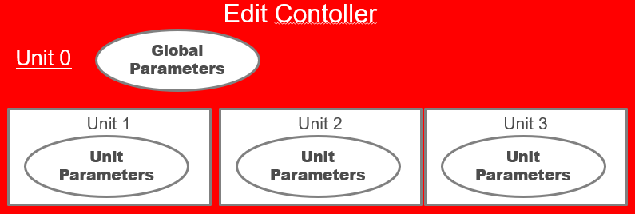
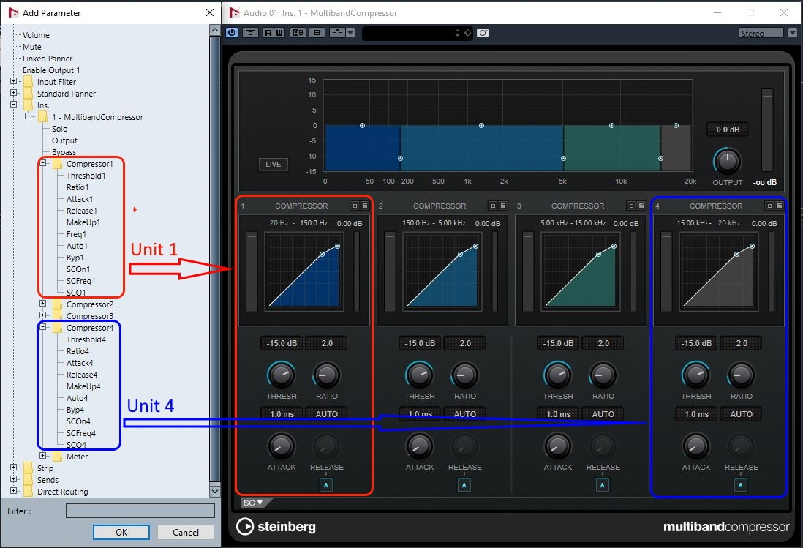
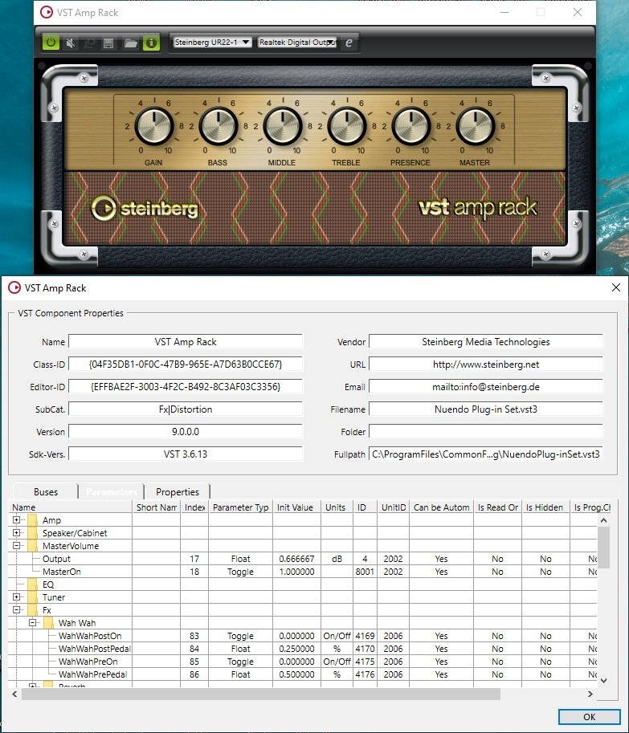
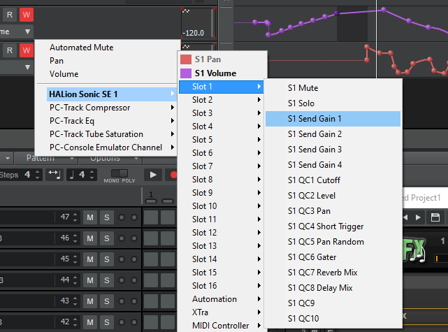

/ VST Home / Technical Documentation
VST 3 Units
On this page:
Related pages:
Introduction
A unit is a logical section of the plug-in.
For example, an EQ section can be a unit. The purposes of units are:
- To reveal the internal logical structure of the plug-in
- To organize parameters by associating them with units
- To Support program lists
- To support handling of Complex Plug-in Structures / Multi-timbral Instruments
- Multiple program lists (associated with a unit)
- Access to program list data
- Associations of MIDI tracks and units
- Synchronization of plug-in GUI and host GUI
Unit details
-
The plug-in can define any number and any kind of units. The semantics of a unit is not important.
-
Units are organized in a hierarchical way. Each unit can contain sub-units.
-
The root unit of this hierarchy is always present (explicit or implicit) and has ID '0'. A plug-in that does not define any further units simply consist of unit '0'.
-
The plug-in has to assign a unique ID to each further unit it defines and must provide a suitable name for it to be shown in the GUI (Vst::UnitInfo).
-
Each unit can 'contain' parameters. All parameters of the plug-in are managed and published by the Vst:: IEditController, but each parameter can be associated with a unit. (Vst:: ParameterInfo::unitId). A host can organize the list of parameters in a tree view reflecting the unit hierarchy as nodes.
-
Each unit can be associated with a program list. (See Complex Plug-in Structures / Multi-timbral Instruments)
-
A unit can be associated with specific busses. There can be any kind of combination, but the VST 3 interfaces only define queries for special situations. (See Units and Tracks)

Most things of interest in regard to units are GUI related, so the access interface Vst:: IUnitInfo needs to be implemented as extension of the edit controller.
See also Vst:: IUnitInfo, Presets & Program Lists.
Examples
-
Example of a plug-in (MultibandCompressor from Cubase pluginset) with structured parameters list that can be used by the host, here in Cubase for selecting a parameter to automate:

-
Example of a plug-in (VST Amp Rack from Cubase pluginset) with structured parameters list visualized in the Parameters tab of the PluginTestHost application:

-
Example of using the unit structure of HALion Sonic SE inside Cakewalk for automation selection:
